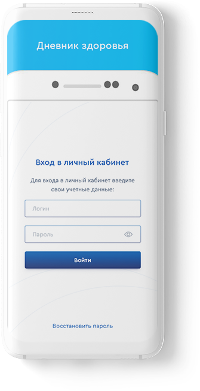

Что такое «Дневник здоровья»?
Дневник пациента — это удобный онлайн-сервис:
- Вносите результаты измерений вручную или с помощью интегрированных приборов
- Ведите персональную медицинскую карту с историей ваших измерений
- Делитесь результатами измерений со специалистами для повышения эффективности лечения
- Получайте рекомендации, созданные специально для вас